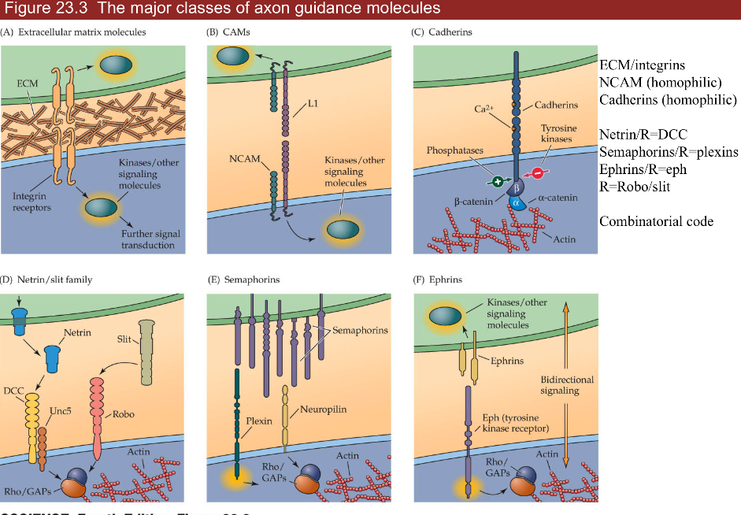

7.7. development¶
notes from Neuroscience, 5th edition + Intro to neurobiology course at UVA
7.7.1. 22 early development¶
ways to study
top-down: rosy retrospection
bottom-up: e.g. LTP/LTD
human disease: stroke-by-stroke
development=ontogeny
timeframe
month 1 - gastrulation
most sensitive time for mom
month 2-5 - cells being born
up to year 2 - axon guidance / synapse formation
gastrulation - process by which early embryo undergoes folds = shapes of NS
diseases
spina bifida - neural tube fails to seal
vitamin B12 can fix this
anencephaly - neural tube fails to close higher up
parts
roofplate at top (back)
floorplate on bottom (stomach)
neural crest - pinches off top of roofplate
neuroblasts = classic stem cells
assymetric division - cells generate themselves and differentiated progeny
ultimate stem cell - fertilized eggs
differentiation
cells made by neuroblasts decide what they are going to become
morphogens
BMP - roofplate
cyclopia - fatal defect in BMP
Hedge hogs - at floor plate
Retinoids - axial, affect skin
affected by thalidomide - helps morning sickness but causes missing limb segments
also affected by accutane
FGFs - axial symmetry
Wnts - skin, gut, hair
loss of wnts is loss of hair
floor plate loses function after embryogenesis except glioblastoma
measure BMP and HH gradient to figure out where you are
treat ALS by adding HH to make more alpha motor neurons
dorsal direction
roofplate makes BMP
low HH - interneurons, sensory neurons (ex. nociceptors)
even BMP/HH - sympathetic
high HH - more motor neurons
floorplate makes HH (hedge hog)
axial specification (anterior/posterior)
tube swells into bulbs that become cerebellum, superior colliculus, cortex
homeotic genes = hox genes - set of genes (transcription factors) in order on chromosome
order corresponds to order of your body parts
rhombomeres - segments in brainstem made by hox gene patterns
lineages
when neuroblast is born, starts producing progeny (family tree of neuron types)
very often, cells are produced in certain order
timing: cell-cell interations and tyrosine kinases determine order
first alpha neurons, then GABAergic to control those, last is glia
neural crest function
migratory - moves out and divides:

neuroblastoma - developed early - severe problem because missing parts of NS
makes DRG and associated glial cells (schwann cells)
makes sympathetic NS and target ganglia, enteric NS, parasympathetic NS targets
makes melanocytes - know how to migrate and divide but can make melanoma (cancer)
cortex is made inside out (6->1)
starts with stem cells called radial glia
cortical dysplasia - missing a layer / duplicating a layer
small part with 2 layer 3s - severe epilepsy
cell death
1/2 of cells die in development
axon guidance (ch 23)
each cell born and axon grows and are guided to a target
dendrite basically follows same rules
synapse formation (ch 23, 24)
pruning and plasticity
NMDA receptor type
form synapses and if they don’t look right - get rid of them
K1/K-1 synapses breaking and forming
after age 21, K-1 starts increasing and net loss of synapses
7.7.2. 23 circuit formation¶
growth cone - motile tip of axon
actin tip
lamellipodium - sheet (hand)
filopodium - huge curves (fingers)
chemo attraction (actin assembly) and chemo repulsion (actin disassembly)
microtubule shaft - tubulin is much more cemented in
mauthner cell of tadpole - first recorded growth cone
can’t regrow (that’s why we can’t regrow spinal cord)
signals in growing axons
pioneer axons (Betz cells) are first - often die
follower axons (other Betz cells) can jump onto these and connect before pioneer dies
trophic support - neuron survives on contact
frog tectum (has superior colliculus) with map of retina:

ephrin (EPH) repulses axon
retinal NT -> tectum AP
axons have different amount of EPH receptors (in retina temporal has more than nasal)
gradient of EPH (in tectum anterior has less than posterior)
if we flip eye upside down (on nasal-temporal axis), image will be upside down
3 classes of axon guidance molecules: 
ECM/integrins
NCAM (homophilic—binds to another neuron that is NCAM),
follower neurons bind to pioneer through NCAM-NCAM interactions
Cadherin (homophilic)
involved in recognition of being some place
4 important ligands/receptors
ephrins/eph
gradient of eph receptor
netrin/dcc = guidance moleculereceptor = DCC
attracts axons to floorplate (midline)
cells without DCC don’t cross midline
slit/robo - receptor is slit
chases axons off (away from midline)
axons not destined to cross midline are born expressing robo
axons destined to cross the midline only express robo after crossing
if DCC (-) and robo (-) will continue wandering around
robo 4 is associated with Tourette’s
semaphorins/plexins
combinatorial code - use combinations of these to guide axons
these are the same genes that move cancer around
synaptic formation
neuroexins - further recognition
turn up in autism and schizophrenia
DSCAM
associated with Down’s syndrome
doesn’t use gradients
makes different kinds of proteins by differential slicing
competition
neurotrophins are secreted by muscle
in early development, a muscle fiber has many alpha motor neurons innervating it
all innervating neurons suck up neurotrophin and whichever sucks up most, kills all the others
eventually, each muscle fiber is innervated by one alpha motor neuron
only enough neurotrophin in target cells for a certain number of synapses
happens everywhere
ex. sympathetic ganglia
ex. sensory neurons in skin get axons to correct cell types based on neurotrophin
merkel - BDNF
proprioceptor - NT3
nociceptor - NGF
ex. muscles - produce NGF
treating ALS with NGF hyperactivates sensory neurons with trkA -> causes chicken pox
signals/receptors
NGF - trk a (Trk receptor - survival signaling pathways)
BDNF - trk b
NT3 - trk b and c
NT4/5 - trk b
all bind p75 (death receptor)
want to keep neurotrophins local, because there aren’t that many of them
7.7.3. 24 plasticity in systems¶
experience-dependent plasticity -

ex. ducks imprinting is non-reversable
learning is crystallized during critical period
CREB and protein synthesis
NMDA receptors
epigenetics - histones control transcription and other things
follow Hebb’s postulate - fire together, wire together
different eyes firing together will sync up (NMDA receptors to strengthen synapses)
systems
ocular dominance
left/right neurons terminate in adjacent zones
LGN in cortex uses efferents just like superior colliculus
label injected into retina can make it into cortex
cat experiments
some cells see only one eye, some see both
cats need to form visual map in short critical period (<6 days)
this is why you need cochlear implant early
both eyes open - equal OD columns
one eye closed - unequal OD columns
branches coming out of LGN neurons grow more branches based on relative light exposure (they compete for eye’s real estate)
strabismus = lazy eye - poor coordination with one of the muscles
one eye is not quite seeing
treat with patch on good eye -> allows bad eye to catch up since eyes compete for ocular dominance columns
more stimulus = more branches
dye from retina goes through thalamus into cortex
rabies virus does same thing: cell->ganglion->brain
tonotopic map
connection between MSO and inferior/superior colliculus
playing one tone increases representation
playing white noise disorganizes map
birdsong
hear song 10-20 times when young - crystallized
afterwards can’t learn new skills
stress
early stress sets stress points later in life
uses serotonin
shifts
superior colliculus - integrate visual, auditory, motor to get X,Y coordinate
auditory map - plastic (but only when young)
visual map - not plastic
if you shift visual map (with a prism), auditory map can shift over to meet the visual
optic neuritis - ms optic nerve disease that shifts map
only young animals can shift unless they were shifted before and are now unadapting
7.7.4. 25 repair and regeneration¶
full repair - human PNS - skin, muscles
1-2 mm/day growth - speed of slow axonal transport
thinnest axons first (thermal receptors and nociceptors)
proprioceptors last
process
perinerium / schwann cells surrounds axons - helps regeneration
growth cones that are cut form stumps -> distal axons degenerate = walerian degeneration
macrophages come in and eat up the damaged stuff
neurotrophins are involved
miswiring is common - regrow and may not find right target
bell’s palsy - loss of facial nerve - recovers with miswiring (salivary / tear)
neuromuscular junctions (NMJ)
damaged cells leave synaptic ghost = glia and protein matrix for nerve to regrow into
repairs easily after heavy training
no repair / glial scar - human CNS
no ghost because so spread out
glia cover wound (scar) but can’t develop further
has astrocytes and oligodendrocytes (types of glial cells)
don’t support regrowth
involved in scarring
microglia - from immune system
control inflammation
release cytokines
nogo - protein that blocks regrowth (but there are other proteins as well)
we try repairing with shunts - piece of sciatic nerve from other part of body with schwann cells from PNS to try to repair a connection in the CNS
stem cell regeneration - put new neurons being formed, 2 places in humans
non-human examples
floor plate of lizards can make new tail
fish retina always making new cells
canary brain part has stem cells that learn new song every year
small C14 incorporation after early development - suggests we don’t regenerate neurons - C14 was from nuclear testing
human areas that do regenerate
hippocampus
memories you store temporarily
subventricular zone makes glomeruli in olfactory bulb cells
turnover daily
sensory neurons and their targets constantly die and regenerate
niche - places where stem cells stay alive
ex. places in CNS with WINT molecular signals
damage control - remove these signals for apoptosis = cell death
glutamate increase - excitotoxicity
can stop with NMDA blockers
induce a coma by cooling them down or GABA drugs
cytokines increase - immune system (like neurotrophins), inflammation
hypoxia/stress
neurotrophin withdrawal
in stress times neurotrophin goes down
7.7.5. 26 diseases¶
7.7.5.1. alzheimer’s¶

overview
age-associated - tons of people get it
doesn’t kill you, secondary complications like pneumonia will kill you
rate is going up
very expensive to treat
declarative memories are affected by Alzheimer’s
these are memories that you know
first 2 areas to go in Alzheimer’s
hippocampus
patient HM had no hippocampus
no anterograde memory - learning new things
hippocampus stores 1 day of info
offloading occurs during sleep (REM sleep) to prefrontal cortex, temporal lobe, V4
dreaming - might see images as you are offloading
basal forebrain - spread synapses all over cortex
uses Ach
ignition key for entire cortex
alzheimer’s characteristics only found in autopsy
amyloid plaques
maybe A-beta causes it
A-beta comes from APP
A-beta42 binds to itself
prion (starts making more of itself)
this cycle could be exacerbated by injury
clumps and attracts immune system which kills local important cells
this could cause Alzheimer’s
rare genetic mutations in A-beta increase probability you get Alzheimer’s
anti-inflammation may be too late
can take drugs that increase Ach functions - ex. cholinergic agonists, cholinesterase inhibitors
tangles
tangles made of protein called Tau
most people think these are just dead cells resulting from Alzheimer’s but some think they cause it
7.7.5.2. parkinson’s¶
loss of substantia nigra pars compacta dopaminergic neurons
when you get down to 20% what you were born with
dopaminergic neurons form melanin = dark color
hits to head can give inflammation
know what they need to do - don’t have enough dopamine to act
treat with L Dopa -> something like dopamine -> take out globus pallidus
Lewy bodies are clumps of alpha synuclein - appear at dopaminergic synapses
clumps like A-beta42
associated with early-onset Parkinson’s (rare) associated with genetic mutations
bradykinesia - slowness of movement
age can give parksinson’s
no evidence that toxins can induce parkinsons
PTP/ pesticides can induce Parkinson’s in test animals
1/500 people